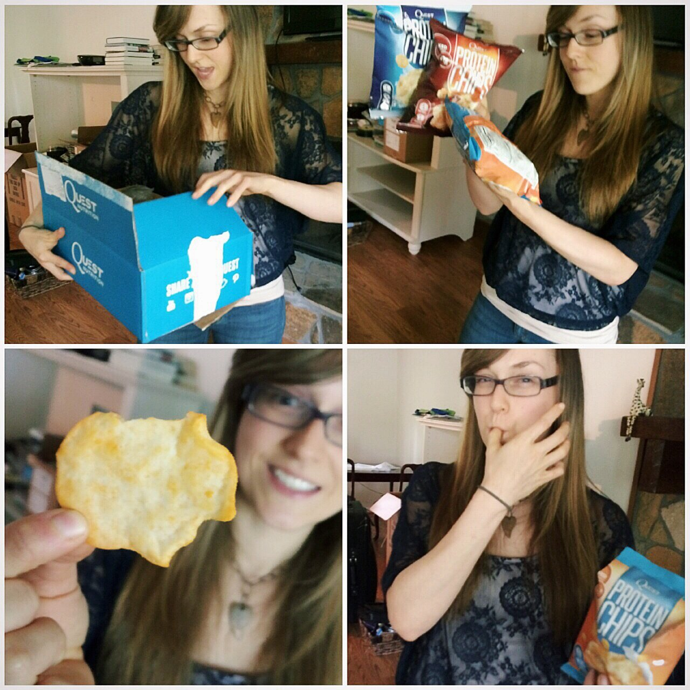
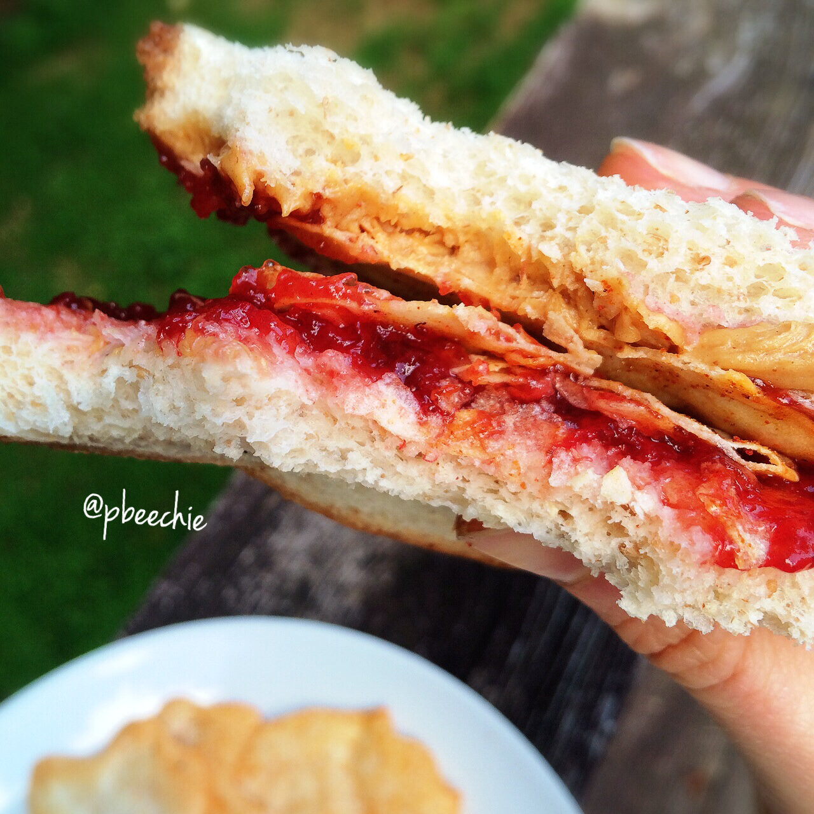

Quest Protein Chips Review

Unless you've been living under a rock this week, you've seen that Quest Nutrition announced a BRAND NEW product this week that's NOT protein bars :o. It's something that hasn't been done by them before! Quest sent samples to taste test and review! My boyfriend caught my overwhelmed reaction; he finds it hilarious (and probably mildly annoying XD) how hyped I get by packages, and he's been making gifs of my reactions lately haha.When I opened the package, I was totally shocked by the new product. I didn't expect it to be CHIPS. Then I was skeptical like.....how can it be healthy?? So I read the label and I'm pretty sure in the top right picture I'm saying something like "5 GRAMS OF CARBS WHAT?!" There's 21 g protein in each bag, there's no soy, and it's gluten free. Each bag is a serving. The nutritional information for 1 bag is 120 calories: 2 g fat, 5 g carbs (0 g fiber, 0 g sugar), and 21 g protein. The ingredients are protein (milk + whey), potatoes, corn starch, and high oleic sunflower oil. It contains less than 2% of sea salt and natural spices/flavors, yeast extract, and calcium carbonate. Iono how but it's amazing.
There are three flavors of the chips: barbecue, cheddar & sour cream, and sea salt. The BBQ one is my favorite; the taste is so legit. The cheddar and sour cream is my least favorite, but it's yummy :D I'm still kinda confused how they pulled this product off perfectly. I imagine the quest office is like the Willy Wonka factory; there must be pure magic going on inside. My boyfriend even said it tastes just like Lay's BBQ chips, just without the oily mess. It leaves the yumyum flavor specks on your fingers, which is the best part if you ask me. Gottaaa lick it all off #noshame. Awesome product Quest, y'all rock.

Thissss picture is basically why I'm excited about the new chips. When I got healthy, it wasn't hard to give up chips and I don't really miss them - which is weird since I used to smash a big bag of lays and a jar of French onion dip in 2 days at age 13 while watching Dr Phil at 5 pm on the couch after school BUT ️I digress. I reeeeally do miss shoving chips or cheez-its in my sandwiches. The crunch is great. So this sandwich was great: plain jane PB&J but with BBQ flavor quest protein chips inside. I was kind of disappointed that the new quest product wasn't SWEET (I clearly love sweets) but chips in sandwiches?! Yesyesyesyes.